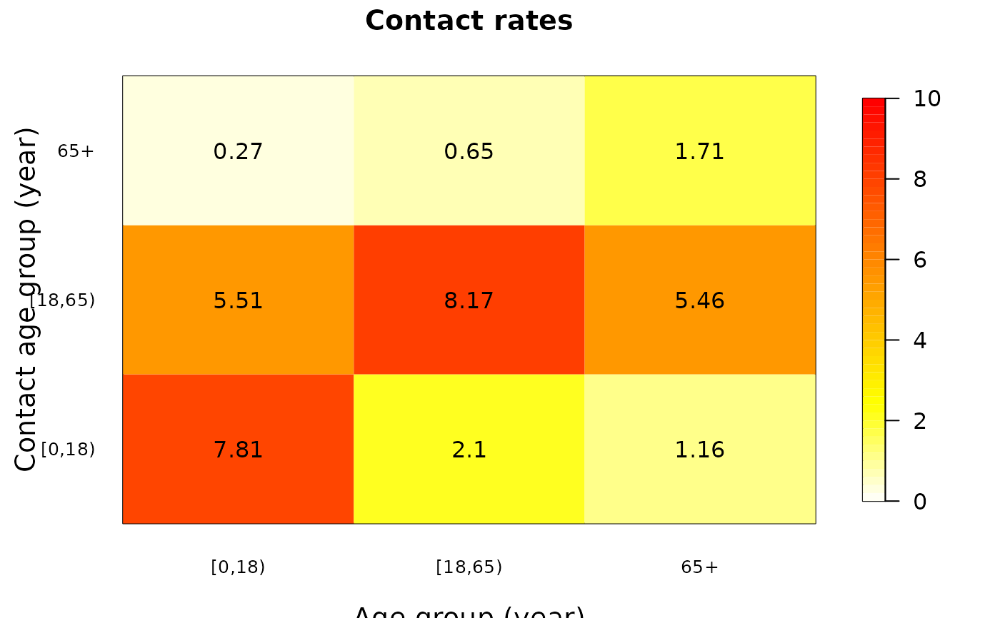

Draws an image plot of a contact matrix with a legend strip and the numeric values in the cells.
Source:R/matrix_plot.R
matrix_plot.RdThis function combines the R image.plot function with numeric contact rates in the matrix cells.
Usage
matrix_plot(
mij,
min.legend = 0,
max.legend = NA,
num.digits = 2,
num.colors = 50,
main,
xlab,
ylab,
legend.width,
cex.lab,
cex.axis,
cex.text,
color.palette = heat.colors,
...
)Arguments
- mij
a contact matrix containing contact rates between participants of age i (rows) with contacts of age j (columns). This is the default matrix format of
contact_matrix().- min.legend
the color scale minimum (default = 0). Set to NA to use the minimium value of
mij.- max.legend
the color scale maximum (default = NA). Set to NA to use the maximum value of
mij.- num.digits
the number of digits when rounding the contact rates (default = 2). Use NA to disable this.
- num.colors
the number of color breaks (default = 50)
- main
the figure title
- xlab
a title for the x axis (default: "Age group (years)")
- ylab
a title for the y axis (default: "Contact age group (years)")
- legend.width
width of the legend strip in characters. Default is 1.
- cex.lab
size of the x and y labels (default: 1.2)
- cex.axis
size of the axis labels (default: 0.8)
- cex.text
size of the numeric values in the matrix (default: 1)
- color.palette
the color palette to use (default:
heat.colors()). Other examples aretopo.colors(),terrain.colors()andhcl.colors(). User-defined functions are also possible if they take the number of colors to be in the palette as function argument.- ...
further arguments to pass to
image.plot()
Details
This is a function using the basic R graphics to make it easier for users of socialmixr to visualise social contact matrices.
Examples
data(polymod)
mij <- contact_matrix(polymod, countries = "United Kingdom", age.limits = c(0, 18,65))$matrix
#> Using POLYMOD social contact data. To cite this in a publication, use the 'cite' function
#> Removing participants that have contacts without age information. To change this behaviour, set the 'missing.contact.age' option
matrix_plot(mij)
